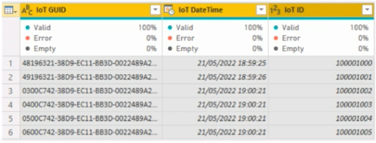

Note: This question is part of a series of questions that present the same scenario. Each question in the series contains a unique solution that might meet the stated goals. Some question sets might have more than one correct solution, while others might not have a correct solution.
After you answer a question in this section, you will NOT be able to return to it. As a result, these questions will not appear in the review screen.
From Power Query Editor, you profile the data shown in the following exhibit.

The IoT GUID and IoT ID columns are unique to each row in the query.
You need to analyze IoT events by the hour and day of the year. The solution must improve dataset performance.
Solution: You split the IoT DateTime column into a column named Date and a column named Time.
Does this meet the goal?